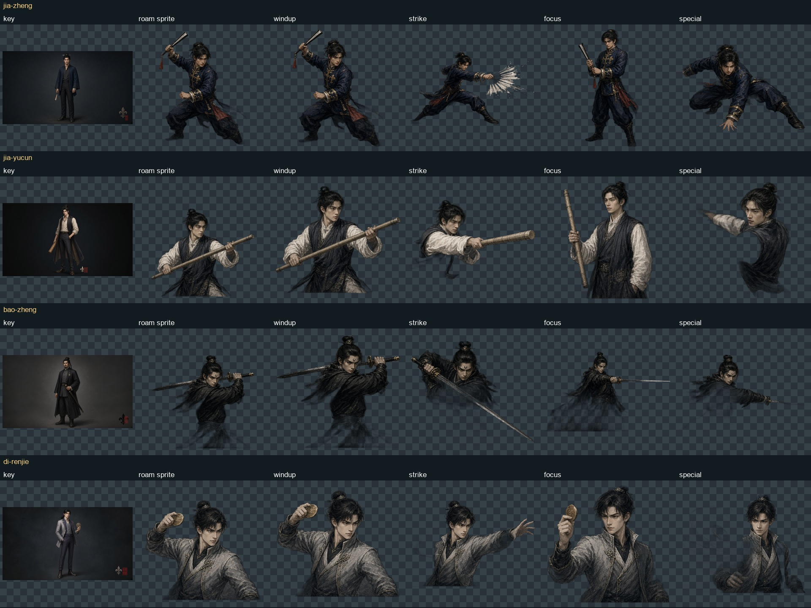
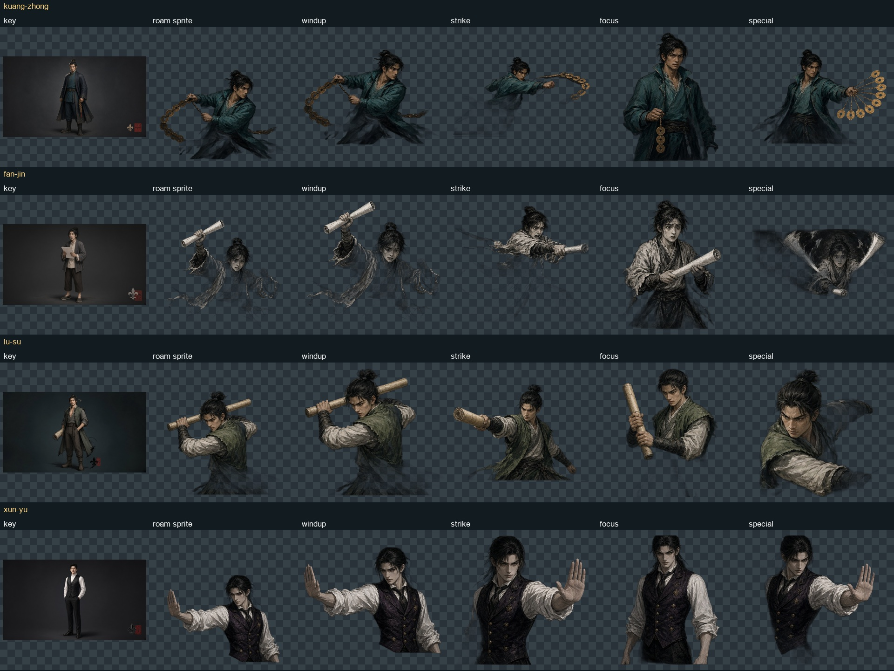
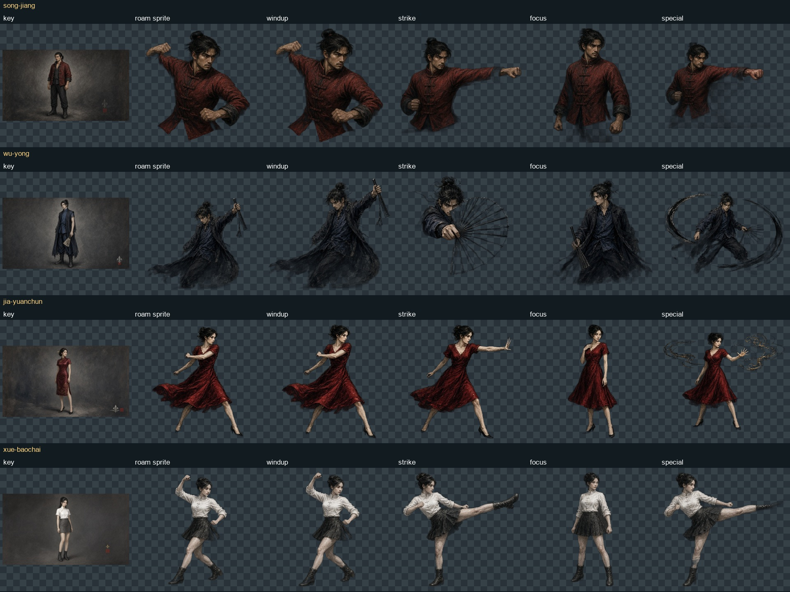
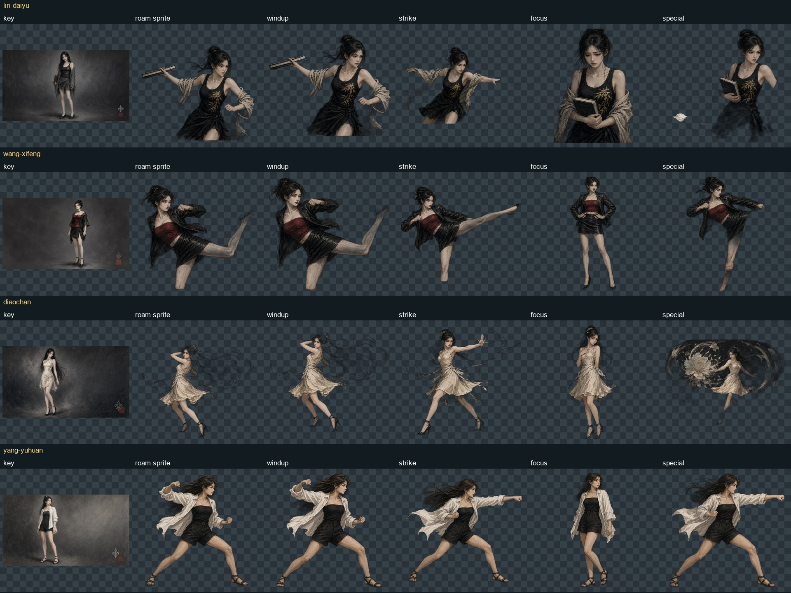
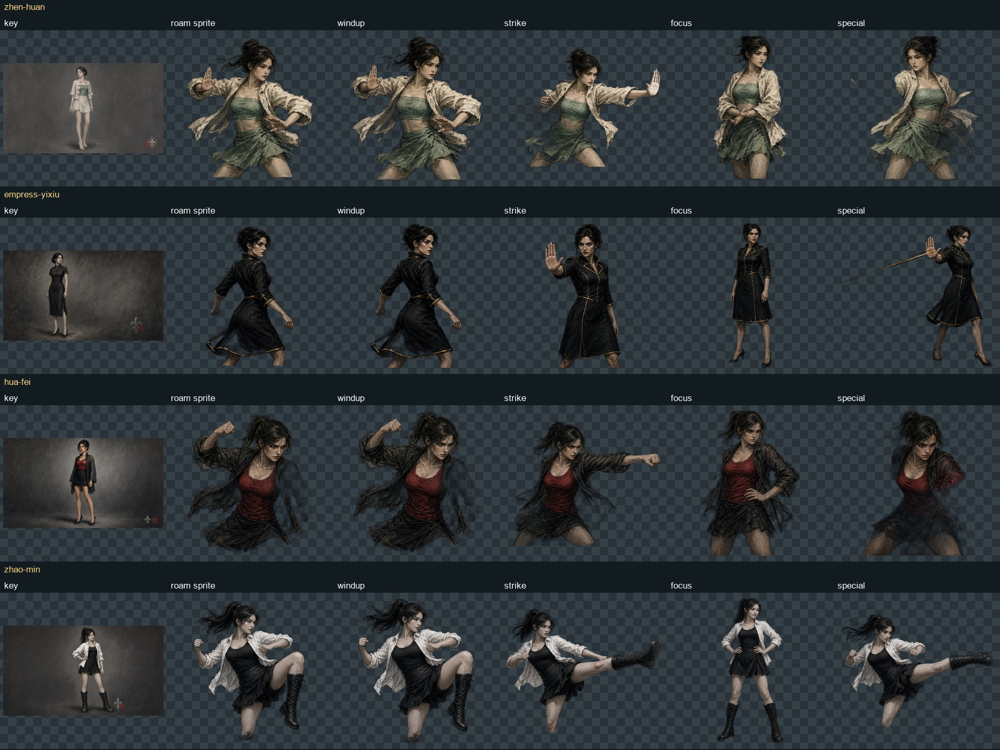
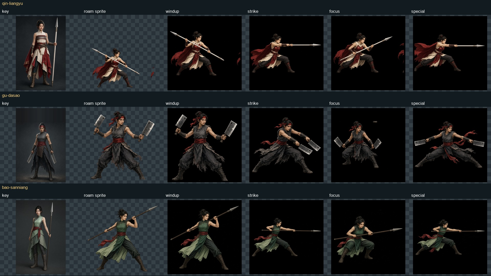
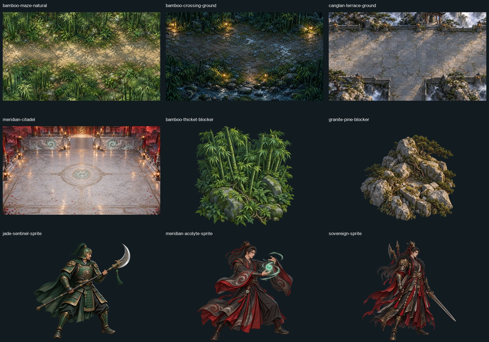

Art review · 3 October 2026
Update: Zhao Min’s full-body ready and raised-knee wind-up are integrated. Ready art also supplies focus; only STRIKE and SPECIAL contact images remain pending.
14 incomplete duel sets · 3 RGB sheets to recover · 6 sets to keep · 2 missing Act V backgrounds.
Full findings and integration instructions · Start with Zhao Min prompts
Attach the approved key named in each prompt. Four separate full-body transparent poses are safer than a generated grid. Comparison sheets retain the original audit pixels; Zhao Min’s subsequent imports are noted above.
Scene prompts
Compare current pixels
Columns: key, roam sprite, wind-up, strike, focus, special. Click a sheet to view at full size.
Character comparison 1

Character comparison 2

Character comparison 3

Character comparison 4

Character comparison 5

Character comparison 6

Stage plates and blockers
